Employee Notification Application
Demo link: http://goo.gl/ryagGK or https://employeenotification-440d8.firebaseapp.com
Git Repo: https://github.com/Ashot72/employee-notification-PWA
Application Description Page: https://ashot72.github.io/employee-notification-PWA/description.html
What is PWA (Progressive Web App)?
You can add some features to any app running in the browser to enhance it. You progressive enhance your web pages to feel like native apps.
If you would like to know how the app is implemented in detail then go to Application Description Page above.
This is an Employee Notification Progressive Web App. Applicants can submit their info and work experience so employers can find them.
The application works offline as well. It is installable app meaning you can add it to your home screen.
Applicants can submit the form while they are offline and data will be submitted as soon as network is available.
Employers can subscribe to get notifications about new applicants even if the application is closed.
Not all browsers support PWA features. Most of them provide some PWA features, such as caching but may not provide push notifications for example.
Only Chrome supports all features both on desktop and Android mobile. Seems Opera also supports all features.
If your browser does not support PWA feature then that feature will be silently ignored and your app will work as expected without that feature.
I have tested the application both on desktop and mobile using Edge, Firefox, Opera, Chrome and Safari browsers.
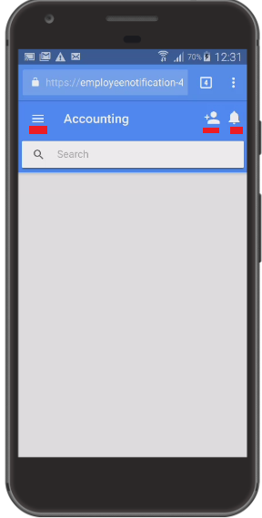
Figure 1
This is the main page of the application running in Chrome browser. I demonstrate it on my Galaxy 4 phone. Users can select a category by touching top left menu icon.
Default category is 'Accounting'. There are two icons at the top right corner. First one is 'Add Applicant' icon and the second one is the 'Subscribe Notification' one.
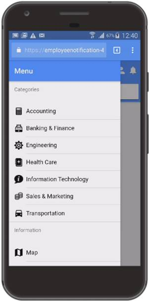
Figure 2
Application has seven categories where applicants submit their info and work experience.
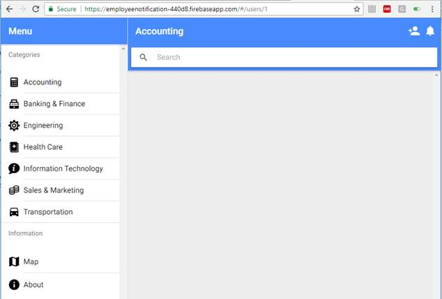
Figure 3
The same page on Chrome desktop.
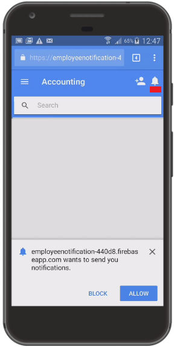
Figure 4
Touch the notification icon. Notification permission is requested to allow send notifications. Allow it.
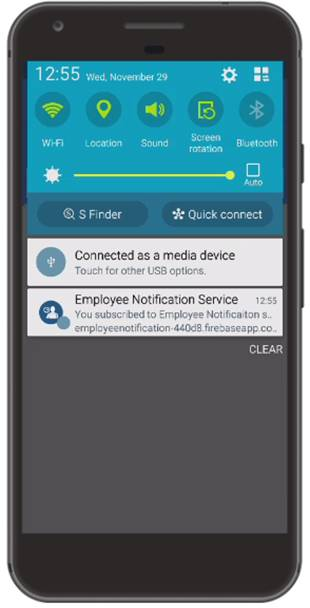
Figure 5
'Employee Notification Service' notification received telling you that you are subscribed to the service. You will receive another notification
as soon as a new applicant is being registered. Were the notification first one on the list (in my case 'Connected as a media device' is the first one)
you would see a large interview picture in the notification. Another important thing to consider is that notification subscription is
browser and device combination. If you open another browser on the same device and navigate to application page
no notification registration would be available. You have to subscribe to notifications to receive it as it is another one.
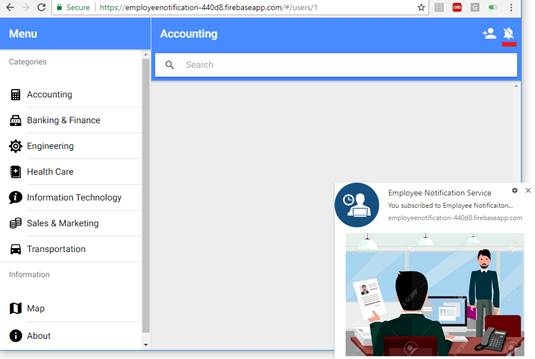
Figure 6
Notification on chrome desktop browser. You can unregister from subscription by clicking notification off icon.
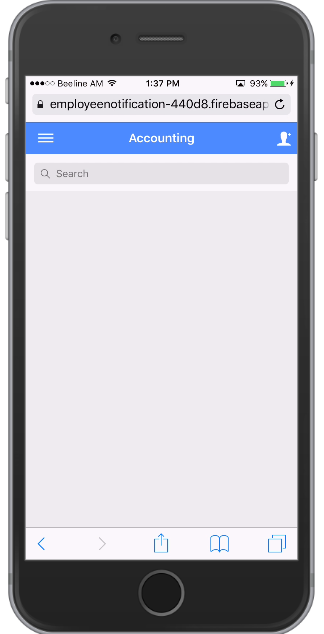
Figure 7
The same page on my iPhone 6 using Chrome browser. You see there is no notification icon. The reason is that we do not show
notification icon is that Push API is not supported on IOS. This means we cannot show PWA push notifications when a new applicant is registered.
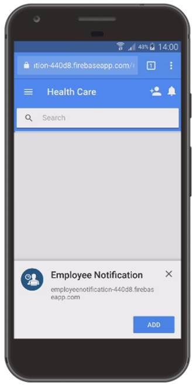
Figure 8
If you select a category you will be presented with a dialog titled 'Employee notification'. The application
will be installed on your home screen by touching 'ADD' button.
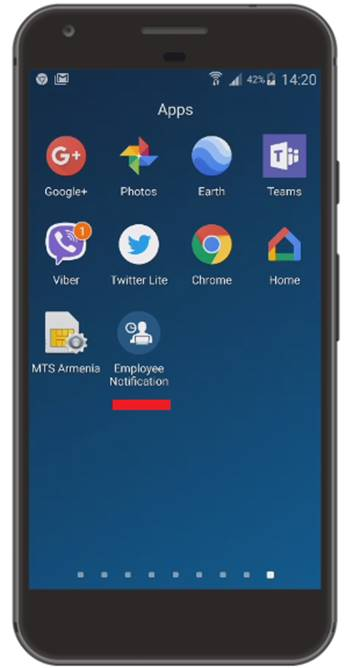
Figure 9
Here is the app installed on my home screen.
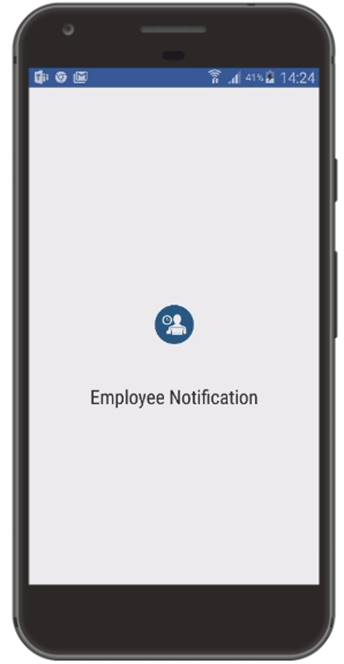
Figure 10
Touch the icon to run the app. Employee Notification app is initializing like a native app.
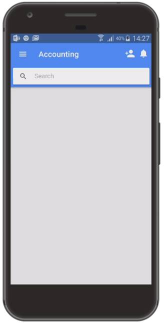
Figure 11
Now the same app is running via desktop icon click. Could you see the difference? Compare it with Figure 8.
The application looks like real app. No browser address bar. It is a standalone app.
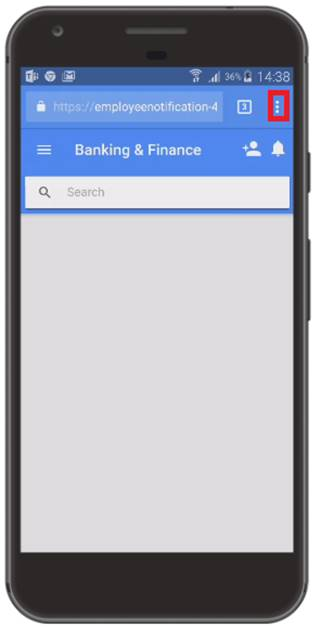
Figure 12
If you did not install the app (by not clicking 'ADD' button) then the dialog (Figure 8) will not be presented anymore unless you clear site data.
Another option is to add via Chrome 'Add to Home screen option'. Select the menu (Figure 12).
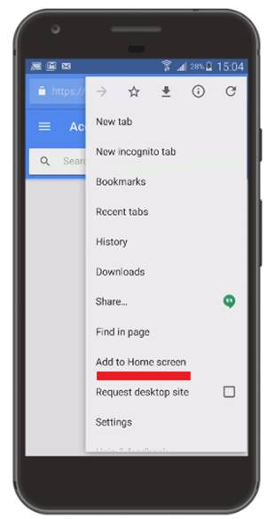
Figure 13
Select 'Add to Home screen' option.
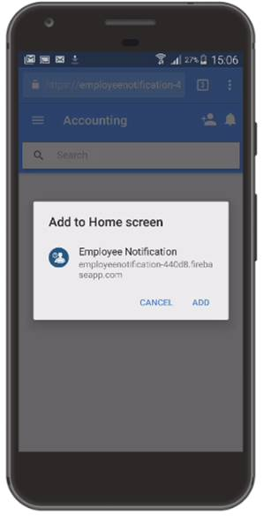
Figure 14
You add the app on your home screen.
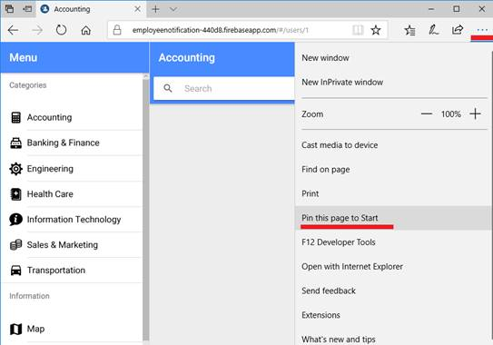
Figure 15
Similarly, we can 'Pin this page to Start' on Microsoft Edge browser.
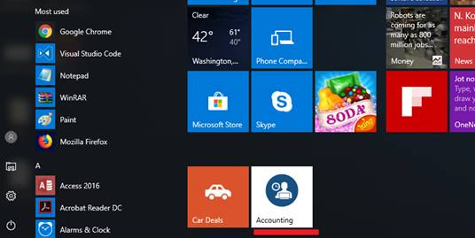
Figure 16
The app page pinned to Start.
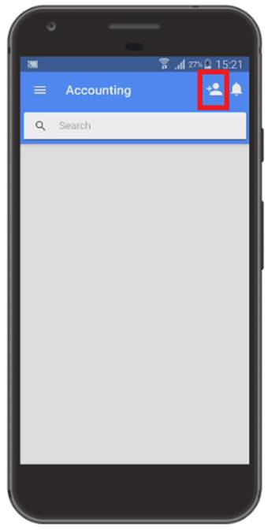
Figure 17
It is time to add an applicant.
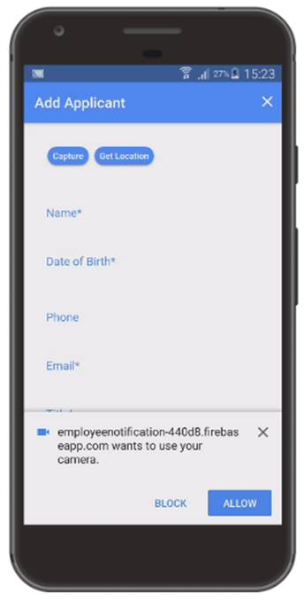
Figure 18
Application is requiring camera access permission. Allow it.
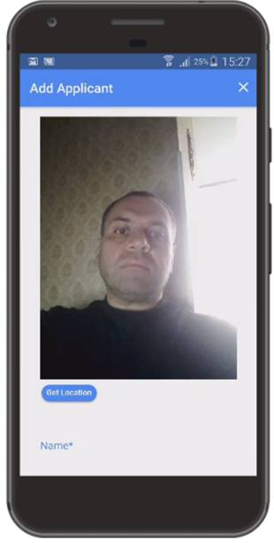
Figure 19
Take your picture from video by clicking 'capture' button.
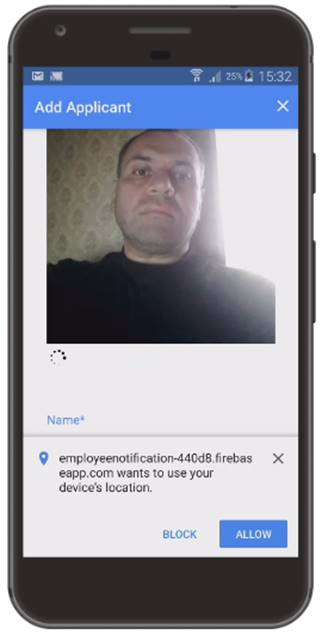
Figure 20
Next click 'Get Location' button. Application is requiring location permission. Allow it.
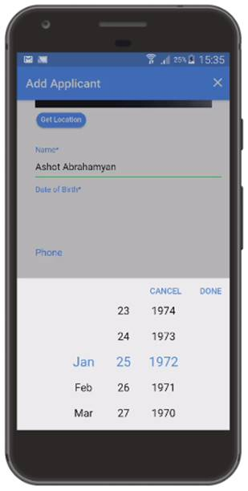
Figure 22
Fill in the form.
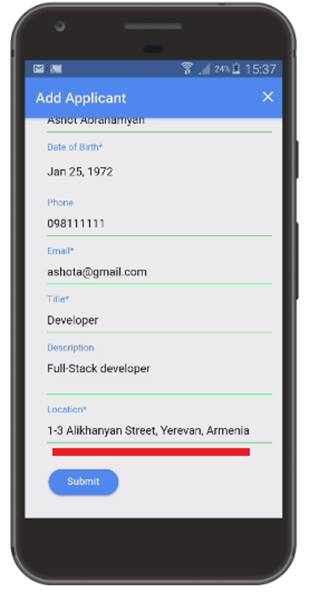
Figure 23
My location has been added once I clicked 'Get Location' button. You can change your location manually before submitting the form.
Submit the form.
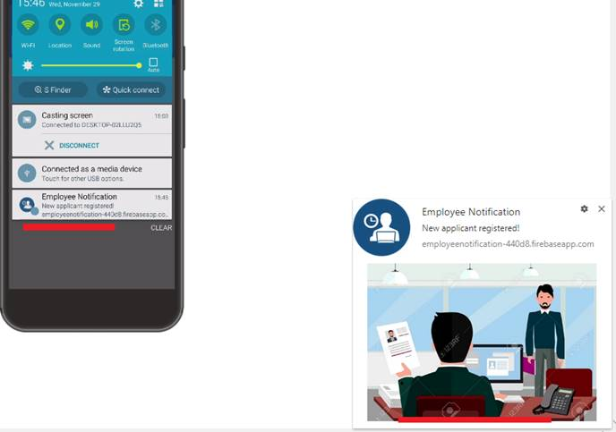
Figure 23
I received both phone and desktop notifications as I was subscribed to both. I would like to mention that the notification is not a browser notification.
It is system notification. You will still get it if your browser is closed. Touch the notification.
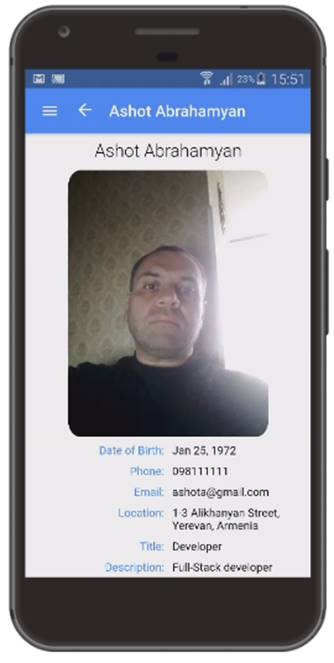
Figure 24
If the application was already running then you will be redirected to applicant's details page otherwise new
browser (standalone app) will be opened and will redirect you to applicant's details page.
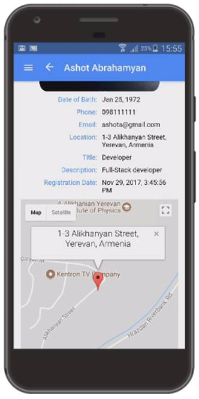
Figure 25
Applicant's location displayed on Google Map.
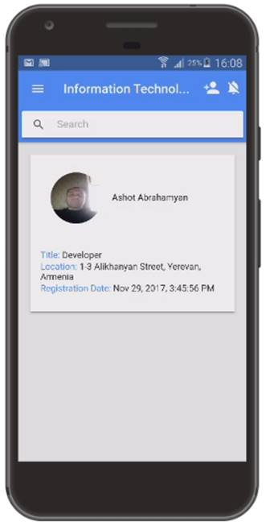
Figure 26
This is the applicants' page of 'Information Technology' category. I am the only one right now.
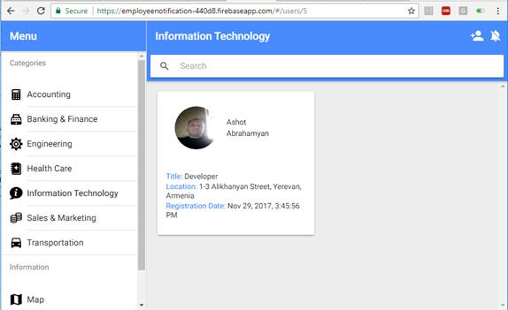
Figure 27
The same page on desktop.
Let's add an applicant by not allowing camera and location permissions.
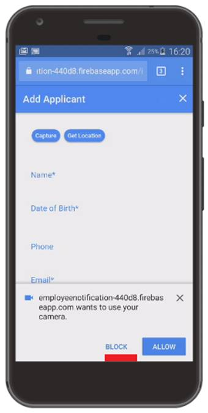
Figure 28
Blocking camera permission.
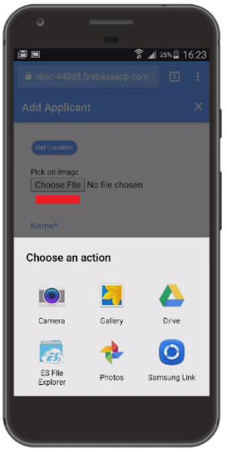
Figure 29
This time file picker option is presented instead of video as no permission is granted.
Select a picture from your device.
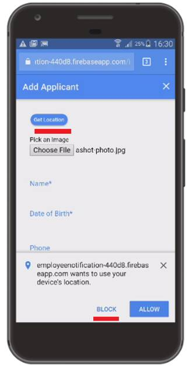
Figure 30
Block location permission.
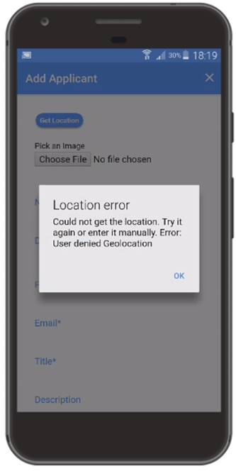
Figure 31
If you try to touch 'Get Location' after location permission being blocked then you will always receive 'User denied Geolocation' message.
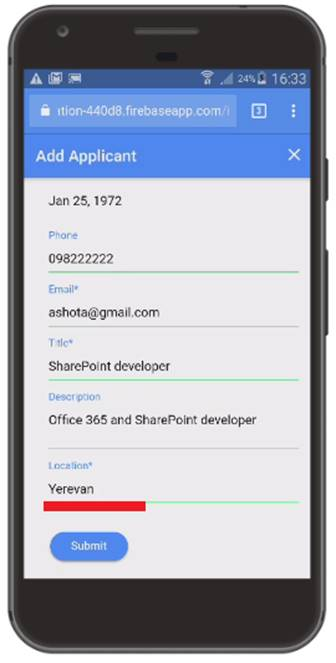
Figure 32
You must fill in Location field manually this time as location permission is blocked.

Figure 33
Now we have two applicants in same category.
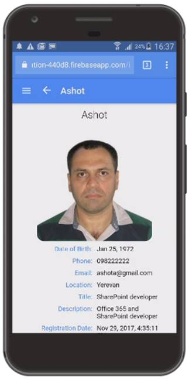
Figure 34
Torch an applicant's control (card) Figure 33, if you would like to navigate to his details page.

Figure 35
Applicant's location on Google Map.
There is a way to reset blocked permissions.
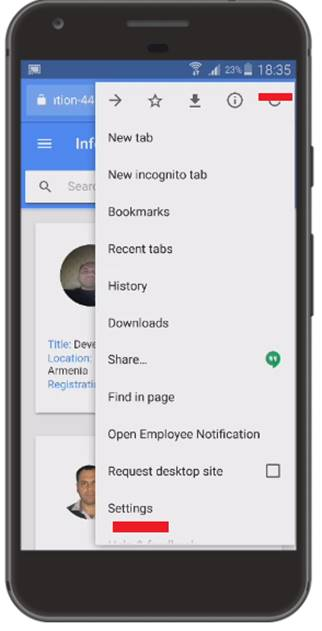
Figure 36
Touch menu icon then go to 'Settings'.
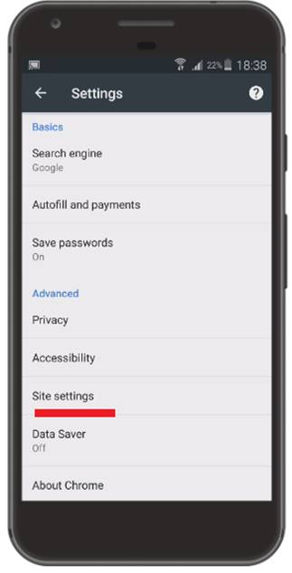
Figure 37
Go to 'Site settings'.
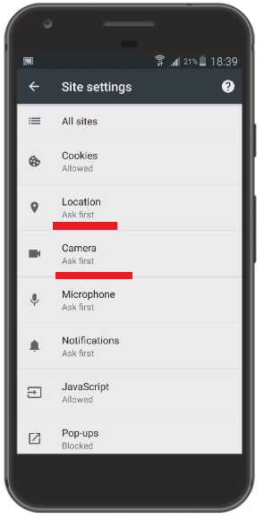
Figure 38
Permissions list under Site settings.
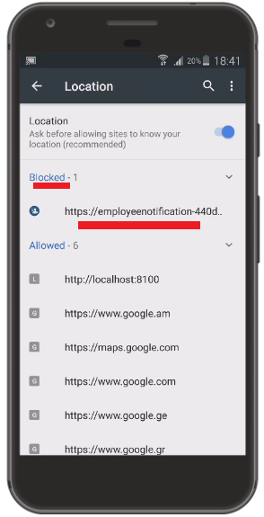
Figure 39
Here is our site with blocked location permission.
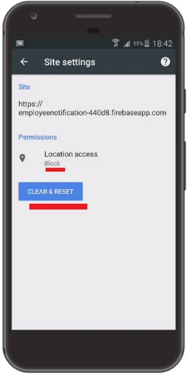
Figure 40
'Clear & Reset' removes permission. 'Get Location' button will present you a dialog about the permission again (Figure 20).
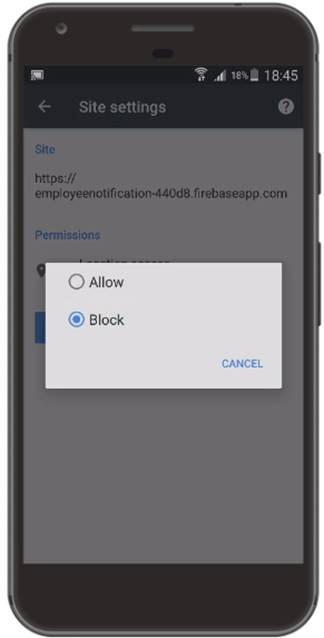
Figure 41
Alternatively, you just touch 'Block' link (Figure 40) and directly switch to 'Allow'.
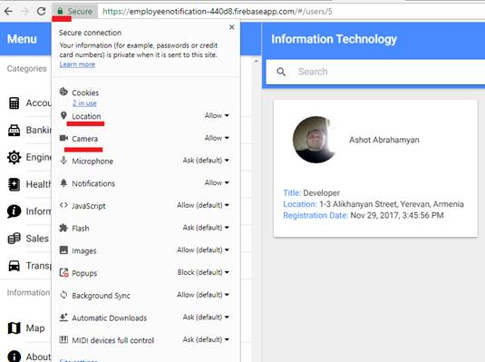
Figure 42
Chrome desktop browser permissions list location. Click the lock icon then select an item to change permission.
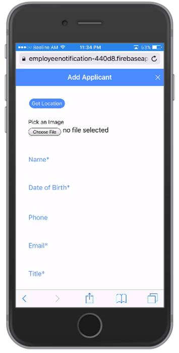
Figure 43
This is Add Applicant page on iPhone. iPhone does not show video. The only way is to touch 'Choose File'.
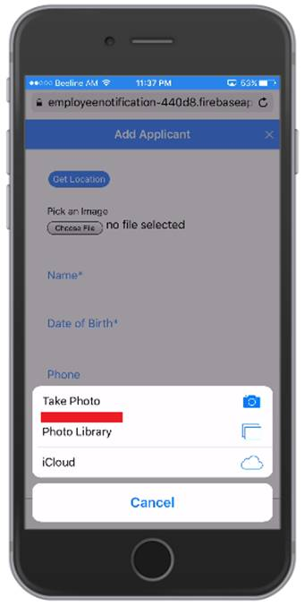
Figure 44
You have different options to select an image.
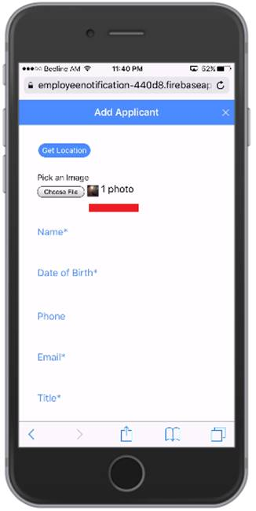
Figure 45
Here is the file selected. Note, that 'Choose file' button option for iPhone is for camera 'allow' permission case (not the case with Android).
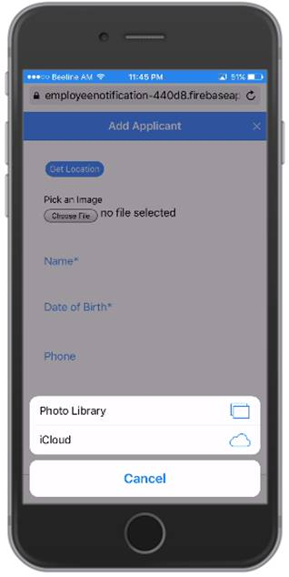
Figure 46
When camera permission is disabled 'Take Photo' options is also disabled.
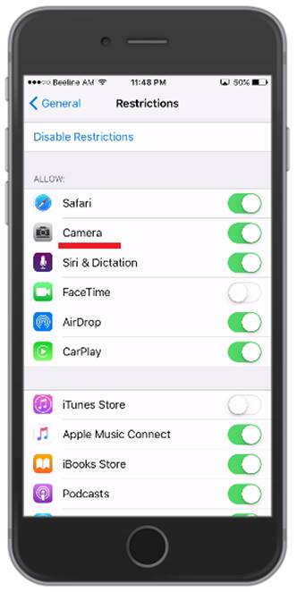
Figure 47
To enable/disable permission on iPhone go to Settings -> General -> Restrictions page.
It is time to test offline access functionality.
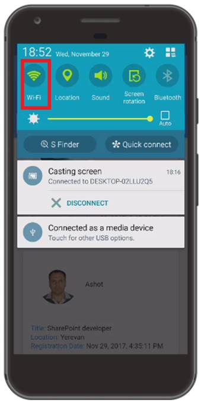
Figure 48
I am turning off my Wi-Fi access.
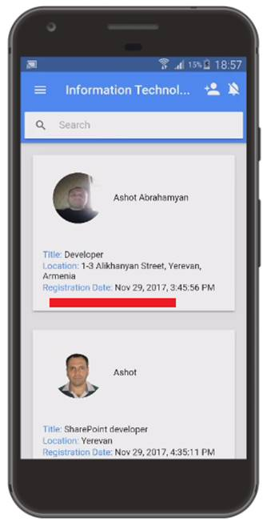
Figure 49
I can still access the site without network access.
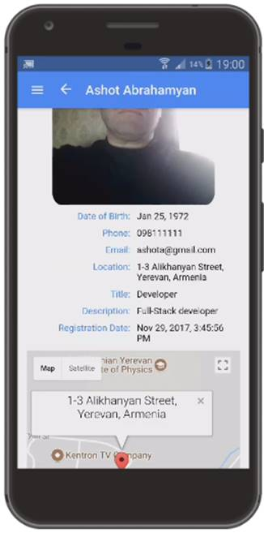
Figure 50
Still can access the details page and see cached map.
Going to add an applicant while offline.
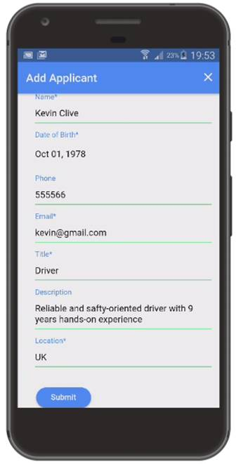
Figure 51
Adding new applicant.
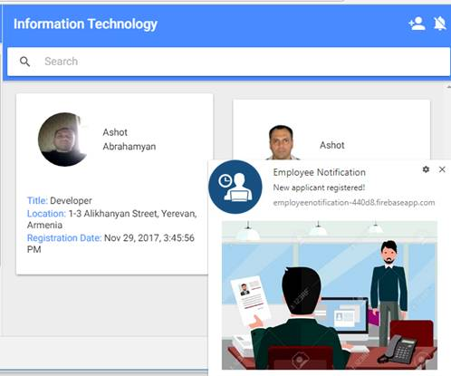
Figure 52
Notification was sent to subscribed devices once network is available.
Figure 53
Kevin Clive added.
Figure 54
Adding another driver applicant to 'Transportation' category via desktop.
Figure 55
Wi-Fi is turned on and I am on 'Information Technology' page. I pull down the page to reload data.
I go offline by turning off Wi-Fi.
Figure 56
You see that the second driver information is available but the picture is not there. The reason is that we get all applicant data on whatever category page you are.
The actual binary image is not in data, only the path. When you navigate to a category then at that time the actual images of that category are downloaded and cached.
After that, pictures of the category will be available even you are offline. You have to decide what and when to cache assets. It is not required to cache everything
and display while offline.
Figure 57
I went online then pulled down 'Transportation' category page and received data, and this time images were cached. If I go offline all the pictures of that
category still will be displayed as they were already cached.
Figure 58
Map shows you current position if you allow location permission.
Figure 59
If you access the map while offline or location permission not being allowed you will receive 'You seem to be offline' message.
Figure 60
My current location.
Figure 61
Application allows to search applicants based on name, title, description and location.